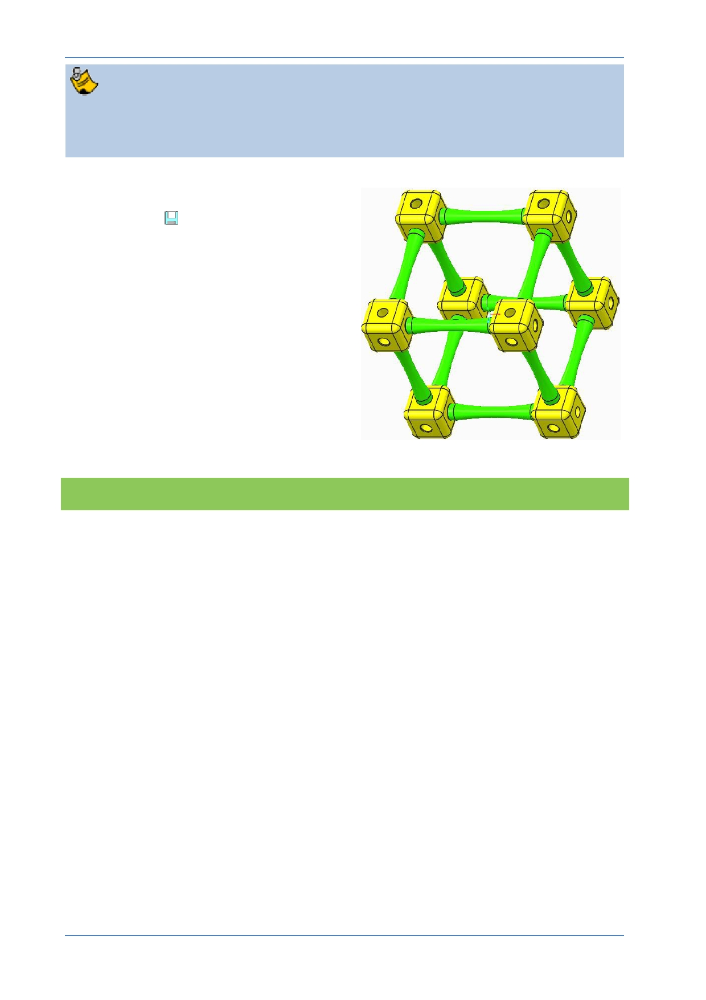

PTC Academic Program
Use care to select the correct references. For example, if you select an edge
rather than surface when constraining the parts of your assembly, you will have
problems.
6. Click Save
to save your work.
What have you learned?
Assembly - adding a component, temporary placement.
Assembly – Placement using constraints and fully constrained.
Assembly – Placement using Interface when adding identical components.
Assembly – 3D Dragger to re-position the part
Assembly - Selecting surfaces
Saving the current model.
© 2012 PTC
Creo Parametric 2.0 Primer
Page 80